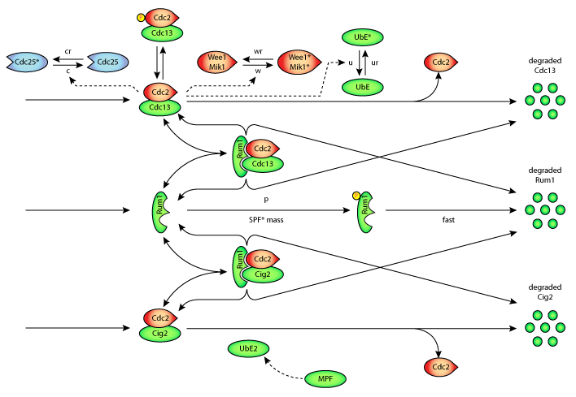

This SBML version of the Novak-Tyson 1997 model originates from BioModels Database: A Database of Annotated Published Models. It is copyright (c) 2005-2010 The BioModels Team. For more information please refer to the terms of use. It is being included in the CellML model repository as proof of concept - that PMR2 is able to store models in formats other than CellML. Also, in the case of this particular model, the CellML version is unable to capture the switching events in the original model. By contrast these can be described in the SBML version of the model. Further this is a test to see how PMR2 handles MIRIAM annotations.
ABSTRACT: A central event in the eukaryotic cell cycle is the decision to commence DNA replication (S phase). Strict controls normally operate to prevent repeated rounds of DNA replication without intervening mitoses ("endoreplication") or initiation of mitosis before DNA is fully replicated ("mitotic catastrophe"). Some of the genetic interactions involved in these controls have recently been identified in yeast. From this evidence we propose a molecular mechanism of "Start" control in Schizosaccharomyces pombe. Using established principles of biochemical kinetics, we compare the properties of this model in detail with the observed behavior of various mutant strains of fission yeast: wee1(-) (size control at Start), cdc13Delta and rum1(OP) (endoreplication), and wee1(-) rum1Delta (rapid division cycles of diminishing cell size). We discuss essential features of the mechanism that are responsible for characteristic properties of Start control in fission yeast, to expose our proposal to crucial experimental tests.
The original paper reference is cited below:
Modeling the control of DNA replication in fission yeast, Bela Novak and John J. Tyson, 1997,

A schematic diagram of the reaction mechanism which describes the G1/S and G2/M controls in fission yeast.